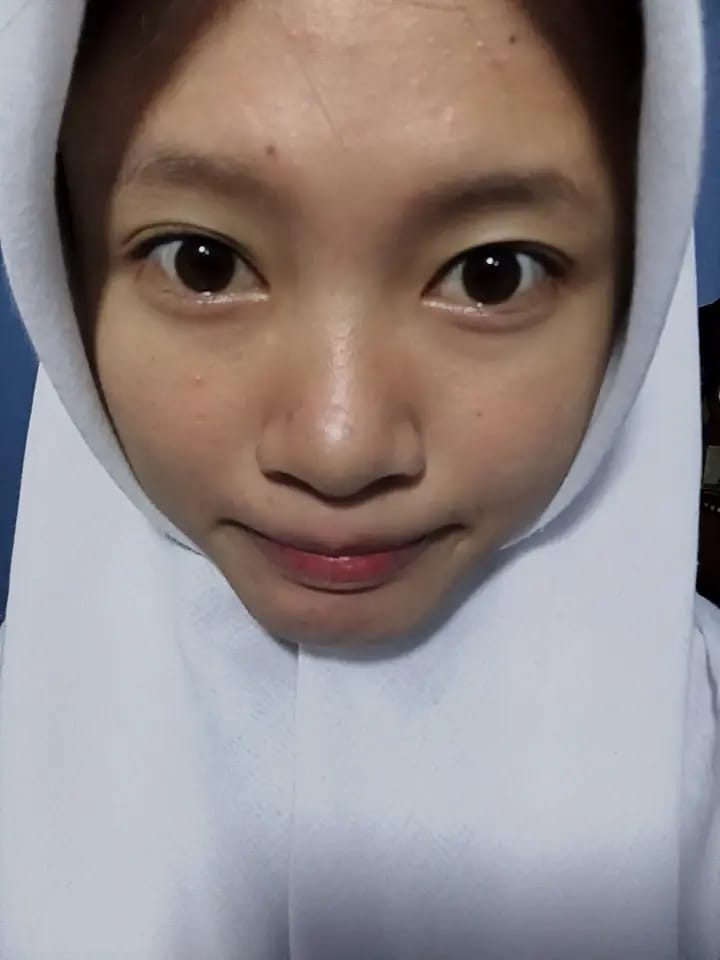

Untuk kamu,
yang selalu kuingat
Beberapa potret kecil dari hari-hari yang tak ingin kulupakan. Sentuh fotonya, dan biarkan ia melayang.

Sebuah catatan
Aku tidak pandai merangkai kata, jadi kubuat halaman kecil ini. Terima kasih sudah hadir dan membuat hari-hariku terasa lebih ringan.
Tulis kalimat dari hatimu di sini. Yang sederhana dan jujur biasanya paling terasa.
Dari aku